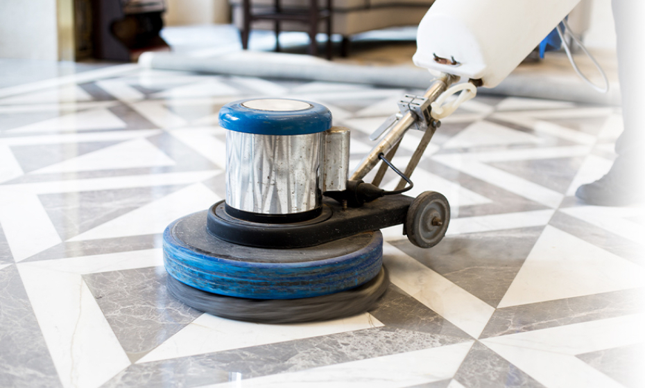
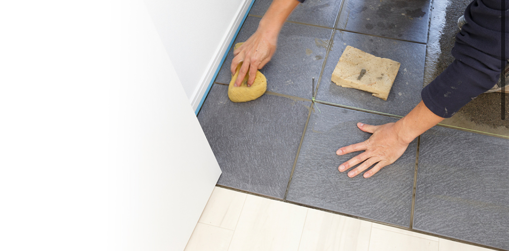
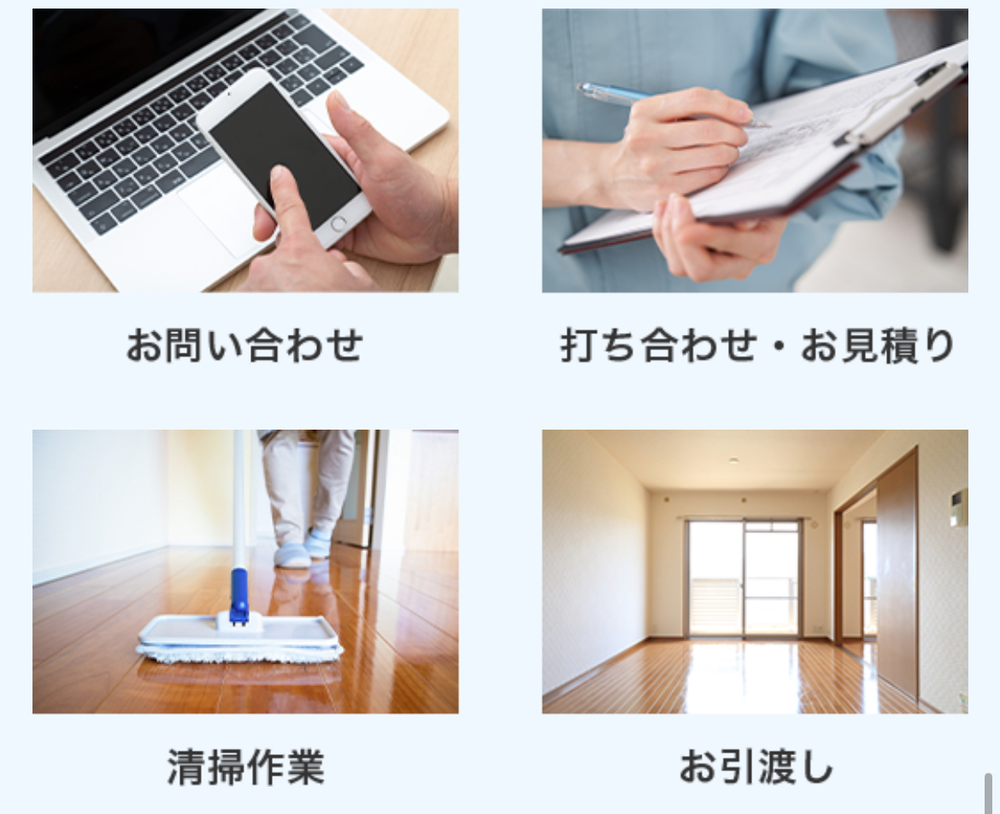

快適な空間を
つくるために
マンション・戸建て・店舗・オフィスなど、
「また帰りたくなる・また来たくなる」空間づくりをお手伝いするのが
清掃サービスLuceです。
日常清掃から定期清掃まで、お客様のライフスタイルや業種に合わせて
最適なプランをご提案。見えない部分こそ丁寧に、手を抜かない清掃で、
いつでも気持ちよく過ごせる空間をキープします。

ただキレイなだけじゃない、
ワンランク上のサービスを
清掃業者なら「汚れが落ちる」のは当たり前。
Luceは、そこからもう一歩先の心地よさを目指しています。
動線を考えた仕上がり・香り・照明とのバランスなど、
細かなところまでこだわった清掃で、
ご家族やお客様を気持ちよくお迎えできる空間をつくります。
定期的な研修で
技術とホスピタリティを磨く
サービスの質を保つため、スタッフの技術研修・マナー研修を
定期的に行っています。
「安心して任せられる」「またお願いしたい」と思っていただけるよう、
清掃技術だけでなく、挨拶・言葉づかい・身だしなみまで徹底。
小さな不安やご要望にも、柔軟にお応えいたします。

ご依頼から作業完了までの流れ
初めての方でも安心してご利用いただけるよう、
Luceでは分かりやすい4ステップでご案内しています。

- ① お問い合わせ
- お電話・メール・LINEからお気軽にご相談ください。簡単な内容をヒアリングします。
- ② お打ち合わせ・お見積り
- 現地確認やご希望をお伺いし、最適なプランとお見積りをご提案します。
- ③ 清掃作業
- プロのスタッフが丁寧に清掃。気になる箇所があればその場でお申し付けください。
- ④ ご確認・お引き渡し
- 仕上がりをご確認いただき、問題がなければお引き渡し完了となります。